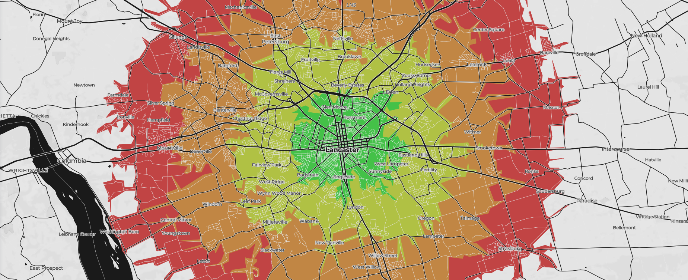

Isochrone & Isodistance service API reference¶
An isochrone is a line that connects points of equal travel time about a given location, from the Greek roots of iso for equal and chrone for time. Valhalla's isochrone service computes areas that are reachable within specified time intervals from a location, and returns the reachable regions as contours of polygons or lines that you can display on a map.
Isodistances follow the same concept, but instead of time one specifies distance intervals.
Isochrone maps share some of the same concepts and terminology with familiar topographic maps, which depict contour lines for points of equal elevation. For this reason other terms common in topography apply, such as contours or isolines.
This is an example of 15, 30, 45 and 60 minute bicycle isochrones centered in Lancaster, PA.

Inputs of the Isochrone service¶
An isochrone request run locally takes the form of localhost:8002/isochrone?json={}, where the JSON inputs inside the {} includes an array of at least one location and options for the route costing model.
For example, you can use the isochrone service to find out where you can travel within a 15-minute walk from your office building. The API request for this uses isochrone? as the request action, pedestrian costing, and a single contour for a 15-minute time interval. The response is GeoJSON, which you can display on a map to visualize where you might be able to walk.
{"locations":[{"lat":40.744014,"lon":-73.990508}],"costing":"pedestrian","contours":[{"time":15.0,"color":"ff0000"}]}&id=Walk_From_Office
There is an option to name your isochrone request by appending &id=. The id is returned with the response so you can match it to your corresponding request.
Location parameters¶
The locations must include a latitude and longitude in decimal degrees. The coordinates can come from many input sources, such as a GPS location, a point or a click on a map, a geocoding service, and so on. External search services, such as Mapbox Geocoding can be used to find places and geocode addresses, whose coordinates can be used as input to the service.
| Location parameters | Description |
|---|---|
lat |
Latitude of the location in degrees. |
lon |
Longitude of the location in degrees. |
Refer to the route location documentation for more information on specifying locations.
Costing parameters¶
The isochrone service uses the auto, bicycle, pedestrian, and multimodal and all other costing models available in the Valhalla Turn-by-Turn service. Refer to the route costing models and costing options documentation for more on how to specify this input.
Other request parameters¶
| Parameter | Description |
|---|---|
date_time |
The local date and time at the location.
|
id |
Name of the isochrone request. If id is specified, the name is returned with the response. |
contours |
A JSON array of contour objects with the time in minutes or distance in kilometers and color to use for each isochrone contour. You can specify up to four contours (by default).
time or distance. |
polygons |
A Boolean value to determine whether to return geojson polygons or linestrings as the contours. The default is false, which returns lines; when true, polygons are returned. Note: When polygons is true, a feature's geometry type can be either Polygon or MultiPolygon, depending on the number of exterior rings formed for a given interval. |
denoise |
A floating point value from 0 to 1 (default of 1) which can be used to remove smaller contours. A value of 1 will only return the largest contour for a given time value. A value of 0.5 drops any contours that are less than half the area of the largest contour in the set of contours for that same time value. |
generalize |
A floating point value in meters used as the tolerance for Douglas-Peucker generalization. Note: Generalization of contours can lead to self-intersections, as well as intersections of adjacent contours. |
show_locations |
A boolean indicating whether the input locations should be returned as MultiPoint features: one feature for the exact input coordinates and one feature for the coordinates of the network node it snapped to. Default false. |
reverse |
A boolean which can be set to do inverse expansion of the isochrone. The reverse isochrone will show from which area the given location can be reached within the given time. |
Outputs of the Isochrone service¶
In the service response, the isochrone contours are returned as GeoJSON, which can be integrated into mapping applications. Alternatively, the grid data that underlies these contours can be returned as a GeoTIFF.
The isochrone service returns contours as GeoJSON line or polygon features for the requested intervals (depending on the value of the polygons request parameter). These contours are calculated using a two dimensional grid. If the format request parameter is set to geotiff, the underlying grid data is returned directly instead of the contours derived from it. It will return one band for each requested metric (i.e. one for time and one for distance). If an isochrone request has been named using the optional &id= input, then the id is returned as a name property for the feature collection within the GeoJSON response. A metric attribute lets you know whether it's a distance or time contour. A warnings array may also be included. This array may contain warning objects informing about deprecated request parameters, clamped values etc. |
See the HTTP return codes for more on messages you might receive from the service.
Draw isochrones on a map¶
Most JavaScript-based GeoJSON renderers, including Leaflet, can use the isochrone styling information directly from the response. At present, you cannot control the opacity through the API.
When making a map, drawing the isochrone contours as lines is more straightforward than polygons, and, therefore, currently is the default and recommended method. When deciding between the output as lines and polygons, consider your use case and the additional styling considerations involved with polygons. For example, fills should be rendered as semi-transparent over the other map layers so they are visible, although you may have more flexibility when using a vector-based map. In addition, polygons from multiple contour levels do not have overlapping areas cut out or removed. In other words, the outer contours include the areas of any inner contours, causing the colors and transparencies to blend when multiple contour polygons are drawn at the same time.
(TODO: write something about rendering the GeoTIFF output.)
Data credits¶
The image includes data from OpenStreetMap.